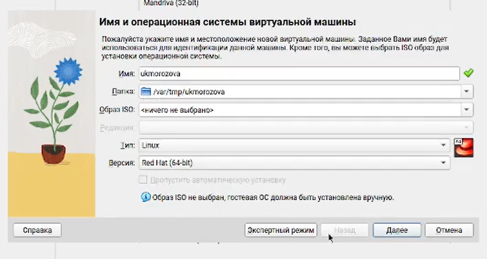

Цели
Цели и задачи
- Приобретение практических навыков установки операционной системы на
виртуальную машину
- Настройки минимально необходимых для дальнейшей работы сервисов
Создание виртуальной машины

Создание вирт.машины
Настройка виртуальной машины
 Завершение настройки
Завершение настройки
Домашнее задание
 Домашнее задание
Домашнее задание